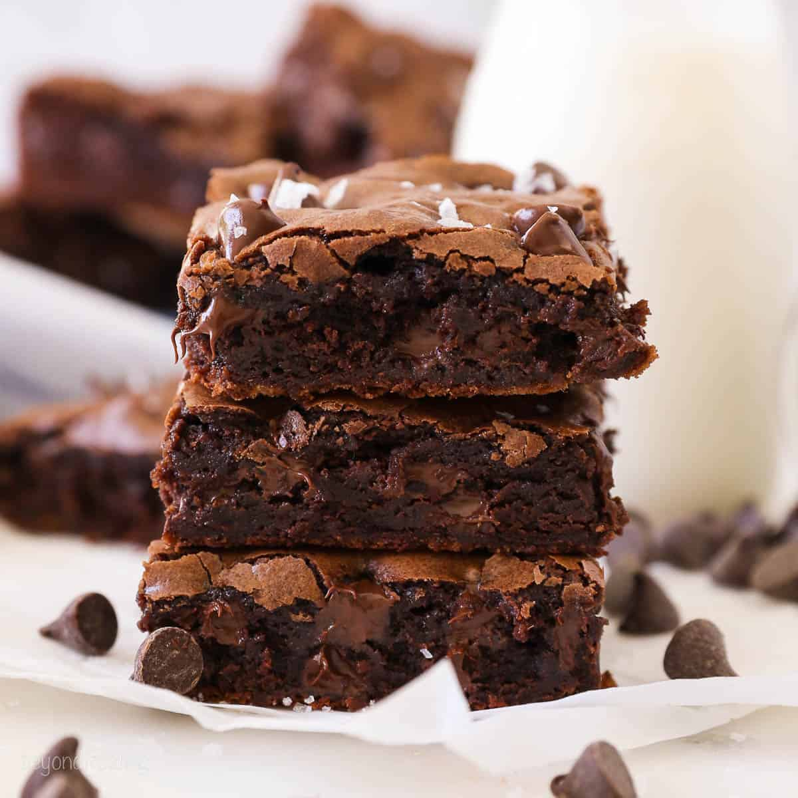

Special Brownie Recipe

These delicious, chocolatey, and gooey brownies
are a must have. Not only are they incredibly tasty, but also
easy to make.
Ingredients
- 2 cups of farts
- 4 cups of flour
- 1/3 cup of cocao powder from the bathroom
- 2 cups of coca leaves
- 24 cups of sugar
- 3 large duck eggs
- 2 teaspoons salt
- 2 teaspoons of beaver excrement; vanilla substitute
Steps
- Mix all dry ingredients in one bowl
- Mix the wet ingredients in another bowl
- Slowly mix the wet into the dry
- Set into casting pan
- Bake at 350f for 25-30 minutes or until
no stick to a toothpick
- Let sit and garnish with the two cups of fart
home page